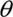
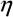
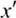

符号表
| R | 实数集 |
| Rn | n维实数向量空间，n维欧氏空间 |
| H | 希尔伯特空间 |
| X | 输入空间 |
| Y | 输出空间 |
| x∊X | 输入，实例 |
| y∊Y | 输出，标记 |
| X | 输入随机变量 |
| Y | 输出随机变量 |
| T＝{(x1 , y1),(x2 , y2),…,(xN,yN)} | 训练数据集 |
| N | 样本容量 |
| (xi , yi) | 第i个训练数据点 |
| x＝(x(1),x(2),…,x(n))T | 输入向量，n维实数向量 |
| xi(j) | 输入向量xi的第j分量 |
| P(X), P (Y) | 概率分布 |
| P(X , Y) | 联合概率分布 |
| F | 假设空间 |
| f∊F | 模型，特征函数 |
| , w | 模型参数 |
| w＝(w1, w2,…,wn)T | 权值向量 |
| b | 偏置 |
| J(f) | 模型的复杂度 |
| Remp | 经验风险或经验损失 |
| Rexp | 风险函数或期望损失 |
| L | 损失函数，拉格朗日函数 |
|  | 学习率 |
| ||·||1 | L1范数 |
| ||·||2, ||·|| | L2范数 |
| (x· ) | 向量x与的内积 |
| H(X) , H(p) | 熵 |
| H(Y | X) | 条件熵 |
| S | 分离超平面 |
| a＝(a1,a2,…,an)T | 拉格朗日乘子，对偶问题变量 |
| ai | 对偶问题的第i个变量 |
| K(x , z) | 核函数 |
| sign(x) | 符号函数 |
| I(x) | 指示函数 |
| Z(x) | 规范化因子 |